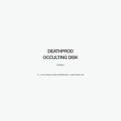
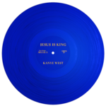
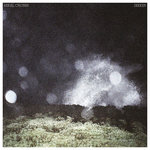

Quick Takes (October 2019)
Hi everyone, and welcome to our latest installement of Quick takes!
We're just about wrapping up the year, which means that the No Ripcord staff has officially begun their voting process for this year's best albums. That being said, things haven't slowed down in terms of new album releases. And this month's nine selections run through a whole gamut of musical styles.
I couldn't let November pass without our take of the new Kanye West, and well, here it is. Make of that what you will. But outside of Jesus is King—unquestionably the most popular album here—I took the opportunity to write about some solid releases that flew under the radar, from Corridor's Sub Pop debut to Longwave's welcome return after 10 years. Contributor Kirk Sever gave a positive take on the new Mikal Cronin, while Mark Moody gives us his take on former Chairlift singer-songwriter Caroline Polachek's surprise debut album.
What were your favorite albums during the month of September? Anything we didn't get to review that we should've? You can always reach us on Facebook, or on our official twitter page. - Juan
...
BODEGA
Shiny New Model
(What’s Your Rupture?)
In the days of Artificial Intelligence and Robotic Process Automation when unmanned Zamboni-sized floor sweepers roam the terminals at J.F.K., a working man like Bodega’s Ben Hozie has cause to be concerned. Continuing with themes established on last year’s excellent debut album, Endless Scroll, Hozie rails on about ATMs and more sophisticated “silver sepulchers” on the band’s Shiny New Model EP. The angular post-punk of the title track kicks things into a nihilistic stomp right from the outset. The other highlight here ends up being a ten-minute reworking of minor album track Truth Is Not Punishment. Stretched out into a linear road race of a live-set staple, the song’s middle becomes a Chuck Berry romp filtered through The Modern Lovers’ sense of abandon. Clearly, the band’s time in the clubs has served them well, with bassist Heather Elle sounding particularly fine here. Elsewhere, Hozie and vocal foil Nikki Belfiglio take turns lamenting the downside of smartphone romance. And Hozie sounds particularly concerned about whether a movement can be revived that may never have existed in the first place. Our children’s children may not remember baseball umpires and humans that sang their own songs, but Bodega’s Shiny New Model makes for the perfect soundtrack to worry yourself silly about such things. [7/10] Mark Moody
 Caroline Polachek
Caroline Polachek
Pang
(Perpetual Novice)
A few years on from Chairlift’s demise, Caroline Polachek emerges with a cool breeze of an album, Pang, that pulses with an understated beat. Having written hits for the likes of Beyoncé, and also having collaborated with Charli XCX and Blood Orange, Polachek has the songwriting smarts to not have to produce her own work—but thankfully she has. Most of the songs here are dance floor worthy, but some drift by without much to grab on to like Hit Me Where It Hurts and the appropriately titled fluff of Go As a Dream. But when the formula works, like on the monster hook of Door (this should be high up on plenty of best-of lists), or the more straightforward So Hot You’re Hurting My Feelings, it showcases Polachek’s pop instincts. And songs like the introspective Look at Me Now and the soaring Parachute show that Polachek can write as heartfelt a tune as anything Broadway can produce. Best listened to sad and lonely in your bedroom, Pang is the perfect dance album for smart and sensitive boys and girls after their day’s journaling are done. [7/10] Mark Moody
Corridor
Junior
(Sub Pop)
Making their Sub Pop debut, Junior will serve as an introduction for many to Montreal's Corridor. Which is a shame, since the post-punk band's first two albums, Supermercado and Le Voyage Eternel, brought an agreeable juxtaposition to their Canadian peers' Preoccupations' menacing, noisier textures. Junior, on the other hand, intends to move away from that influence by softening their sharp hooks and adding a more exploratory aesthetic. It's surprising to hear that it was recorded in a time crunch, considering tracks like Domino and Milan take psychedelic detours without losing their tightness and frantic groove. Agent Double sounds like a blossoming of their early work, where the band maintains an airy rhythm that careens around their barbed, slightly discordant hooks. Corridor take many chances throughout Junior (if you need any proof, check out the jarring, feedback-laden Pow), expanding their craft despite falling into familiar patterns—followers of the band will notice how they sometimes hold onto their older tendencies (see: Microscopie, the title track). Nevertheless, the strides they take show how they're an asset to their new label—and not the other way around. [7/10] Juan Edgardo Rodríguez
Cursive
Get Fixed
(15 Passenger)
To better appreciate Get Fixed, Cursive's latest surprise album, it's best to begin with 2018's Vitriola. Though not meant to complement each other, there is a thematic cohesion that links both albums together. Consumed by Trump-era anxiety, the Nebraska art-rock mainstays act out their pent-up anger over not necessarily the politics that surround us, but how we directly make choices inspired by political motives. Whereas Vitiola features characters that stumble into life's everyday hurdles, Get Fixed songs like Barricade and Horror is a Human Being point the finger at those responsible for failing the vulnerable. Much of the album feels like it's about to spin out of control, as frontman Tim Kasher and his cohorts double down on their cunning, circular arrangements within a darker undercurrent. Performed alongside Megan Siebe, who adds a dramatic touch with her signature cello, Get Fixed allows Cursive to decompress for one last time before deciding on their next step. [7/10] Juan Edgardo Rodríguez
Deathprod
Occulting Disk
(Smalltown Supersound)
Deathprod is the twenty-five-year-old ambient electronic project of Helge Sten, who identifies with the minimalist electronic tradition. His first album in fifteen years, Occulting Disk, continues that minimalism, though the sound is as minimal as Thor's hammer. The album consists of eight “Occultations” and two longer pieces (Disappearance/Reappearance and Black Transit of Jupiter's Third Satellite), and each track is a bleak and (usually) menacing soundscape. The general sound emanates from a phalanx of electric noise soaked in darkness, buzzing and growling like a locust swarm, with occasional outer space pings like the theremin sounds on old Disneyland rides. If you hear ten seconds of any given song then you've heard its entirety, yet you haven't experienced the song. It's that sort of an album. I don't know the occasion for absorbing all seventy-five minutes of this album in one sitting—unless you're a satanist meditating or a crazed scientist—yet I powered through. The experience proved cleansing, the auditory equivalent of a sensory deprivation chamber or an embodiment of Werner Herzog's definition of silence (“Do you not then hear this horrible scream all around you that people usually call silence?”). Senses slough away in the wash of noise, until you float, body-less, Deathprod's sounds eclipsing your self. [7/10] Kirk Sever
Kanye West
Jesus is King
(Getting Out Our Dreams II/Def Jam)
Kanye West's downfall seems self-inflicted, but it's mostly due to his contrarian nature. We're not sure if this is what brought the once boundary-pushing provocateur to find Christianity, but judging by his latest, Jesus is King, it's as if he's not even trying to give us any more insight outside of wanting to dabble in so-called "worship music." And outside of making it clear from practically half of the song's titles, West seems more concerned in showing off how faith gives him more power and command. Most of the time, he sounds like a petulant rich man who needs to justify his outrageous choices—whether he's finding excuses to charge high prices to feed his family (On God) or grousing over those who question his religious piety (Hands On). The only saving grace, pun possibly intended, is God Is, where West's voice genuinely cracks as he calls the Lord over a soulful sample. As you might imagine, the production overall is expectedly top-notch. But that's the slight upside to an otherwise tepid attempt at finding commonality with his devout followers—except that we never wanted West to come across as ordinary as the rest of us. [5/10] Juan Edgardo Rodríguez
Longwave
If We Ever Live Forever
(Bodan Kuma Recordings)
Out of the early 2000's NYC music scene, indie-rock quartet Longwave sounded like the sleek, disciplined alternative to their cooler counterparts. After three solid, if unremarkable releases, it felt like the band split the difference between shimmering sonic textures and tuneful, accessible hooks without fully committing to both. Ten years later, their strapping fourth LP, If We Ever Live Forever, answers what could've been had they carried on with more commercial weight. Pulsing, driving songs like the title track and 1 X 1 (Disorder) use rippling reverb and a muscular rhythm section, both anchored by leader singer Sam Smith's enduring vocals. Stay With Me comes close to replicating Secrets Are Sinister highlight Satellites, yet it features a chorus that sounds more akin to the modern rock stylings of bands like Foster the People. Most of the latter half of the album uses larger, sweeping gestures, much like their perennial influence U2, proving that they haven't lost their way—making it clear that they're ready for a long-overdue reappraisal. [7/10] Juan Edgardo Rodríguez
Lindstrøm
On A Clear Day I Can See You Forever
(Smalltown Supersound)
Hans-Peter Lindstrøm made a name for himself using electronic music to create indelibly rhythmic speedways of sound and touching on video game soundtracks of the past, bringing those sounds into the present and foreseeing current synthwave trends. From the first track on Lindstrøm's latest, On A Clear Day I Can See You Forever, there is a sense that he's taken a detour away from his past. The titular opener feels more Vangelis than Lindstrøm's typical nu-disco, with synth sounds rising from abyssal bass-notes to oxygen-thin heights in a moment, all of which feels loose and improvisatory. Not surprisingly, as it turns out, after planning each of the four tracks, Lindstrøm laid them down in one take. This works for the moody Really Deep Snow and the reflective Swing Low Sweet LFO, but the other two tracks don't feel as fleshed out—or they feel like improvisations insomuch as they're fine exercises, but not compelling as a whole. The result is an album that acts as an interesting diversion in Lindstrøm's catalog, and perhaps even a needed downshift, yet arguably doesn't live up to the epic achievements of his past records. That said, as a work of ambient synth-noise with stretches of delicate melody, Lindstrøm is effective enough to evoke something akin to Blade Runner outtakes. [6/10] Kirk Sever
Mikal Cronin
Seeker
(Merge Records)
Mikal Cronin's latest is predictably catchy, hooky, and imbued with Cronin's trademark chamber-garage sounds of fuzz, concrete, and linoleum. With each album in Cronin's catalog, he seems to grow in confidence and song-writing ability—and Seeker is no exception. Cronin flexes between midnight reflections (Fire), classic-rock tinged anthems (I've Got Reason), and bongo-pinging arabesques reminiscent of his work with Ty Segall (Shelter). Connecting the various songs is an undeniable attention to musicianship, and in particular, to songwriting. Cronin may be associated with other So-Cal garage acts, but he's done enough to elevate himself beyond that simple categorization. It might be time to shift the lens on Cronin and to place him in the discourse of notable singer-songwriters, as an artist maturing in his own singular and promising direction. [8/10] Kirk Sever
8 November, 2019 - 06:17 — No Ripcord Staff